if(!require(tidyverse)) install.packages("tidyverse")
if(!require(dlnm)) install.packages("dlnm")
if(!require(ggplot2)) install.packages("ggplot2")
if(!require(readxl)) install.packages("readxl")
if(!require(lubridate)) install.packages("lubridate")
if(!require(plotly)) install.packages("plotly")
if(!require(forecast)) install.packages("forecast")
if(!require(gsheet)) install.packages("gsheet")
if(!require(Hmisc)) install.packages("Hmisc")
if(!require(mgcv)) install.packages("mgcv")4 시계열분석
4.1 introduction
시계열적 자료를 분석하고 나타나는 현상과 특정 요인과 관련성을 탐색해보는 시간입니다. 예를 들어 미세먼지가 높은 날 심혈관 질환이 발생하는가?에 대한 질문에 답하기 위해서 생가할 것이 몇가지 있습니다. 미세먼지가 높은 날이란? 심혈관 질환 사망이 높은 날이란? 이 두가지 요소를 검토하게 됩니다.
그런데 심혈관 질환의 사망은 요일마다 다르고, 계절에 따라 변동하며, 장기 적으로는 점차 증가 또는 감소를 합니다. 그런데 미세먼지도 점차 증가하고 있으니, 단순 상관관계를 보면 미세먼지도 증가 심혈관 사망도 증가하면 양의 관련성을 보이게 됩니다. 마찬가지로 GDP와 자살의 관계를 보면 어떨까요? 우리나라의 자살률은 증가하고 있습니다. 그런데 GDP도 증가하고 있습니다. 그러니 GDP의 증가와 자살의 증가는 양의 상관관계가 있다고 나옵니다. 맞나요? 네 심혈관 사망, 자살의 증가의 계절적 요소, 장기간 추세(trend)가 아니라 변동이 미세먼지나 GDP의 변동과 어떠한 관계가 있는지가 우리의 궁금증일 것 입니다. 이러한 궁금증을 R을 이용해서 풀어보도록 하겠습니다.
4.2 공기 오염와 건강
the original book is https://www.springer.com/gp/book/9780387781662 이 책에서 중요한 부분을 요약하고, 몇몇을 추가하여 진행하겠습니다. 원본을 읽어 보시는 것을 추천해 드립니다.
4.2.1 시작
이 책은 NMMAPSlite 패키지를 사용했지만, 해당 패키지와 데이터는 사용하기 쉽지 않습니다. 따라서 Gasparrini의 dlnm 패키지와 해당 패키지의 데이터가 이 요약 튜토리얼(https://github.com/gasparrini/dlnm/tree/master/data)에서 사용되었습니다.
필요한 라이브러리를 불러옵니다.
4.2.2 환경오염과 건강을 어떻게 연구할 것인가가
4.2.2.1 tell a story
’매일 발생하는 대기 오염 수준의 변화와 매일 발생하는 사망자 수 변화 사이의 관계’에 대한 이야기를 하고 싶습니다. 따라서, 예측보다는 연관성을 추정하는 데 유용한 통계 모델이 필요합니다.
4.2.2.2 추정 vs. 예측
과학적으로 흥미로운 질문 중 하나는 “PM10 시계열의 변화가 사망률 시계열의 변화와 관련이 있는가?”입니다. 이 질문은 본질적으로 시간에 따라 변하는 건강 결과 \(y_{t}\)와 시간에 따라 변하는 노출 \(x_{t}\) 간의 관계를 탐구합니다. 이를 간단한 선형 모델로 표현하면 (식 1.1)과 같이 나타낼 수 있습니다.
\[Y_{i}=\beta_{0}+\beta_{1}\textrm{x}_{t}+\epsilon_{t} \tag{1.1}\]
| estimates | contents |
|---|---|
| \(\beta_{0}\) | the mean mortality count |
| \(\beta_{1}\) | tthe increase in mortality associated with a unit increase in PM10(\(x_{t}\)) |
| \(\epsilon_{t}\) | a stationary mean zero error process. |
\(\bar{x}_{t}^{Y}\): Y라는 특정 변수의 t 시점에서의 평균값을 의미합니다. \(\bar{x}_{t}\): t 시점에서의 Y 변수의 실제 값을 의미합니다.
예를 들어, 노출 시계열 \(x_{t}\)를 가져와서 두 부분으로 분해한다고 가정해 봅시다: 평균(\(\bar{x}{t}^{Y}\)) + 편차(\(x{t} - \bar{x}_{t}^{Y}\))
average: \(\bar{x}_{t}^{Y}\)
deviation: \(x_{t} - \bar{x}_{t}^{Y}\)
따라서 우리는 (1.1)을 아래와 같이 재구성할 수 있습니다:
\[Y_{t}=\beta_{0}+ \beta_{1}\bar{x}_{t}^{Y}+\beta_{2}(x_{t} - \bar{x}_{t}^{Y}) +\epsilon_{t} \tag{1.2}\]
모델 (1.2)는 \(\beta_1 = \beta_2\)라면 모델 (1.1)과 동일하지만, 모델 (1.2)는 이 둘이 같을 필요는 없습니다.
같은 맥락에서, 연간 평균은 계절 평균 또는 월간 평균(\(z_{t}\))으로 분해될 수 있습니다.
\[z_{t} = \bar{z}_{t}^{S}+(z_{t} - \bar{z}_{t}^{S}) \tag{1.3}\] So, we can use following model
\[Y_{t}=\beta_{0}+ \beta_{1}\bar{x}_{t}^{Y}+\beta_{2}\bar{z}_{t}^{S}+\beta_{3}(z_{t} - \bar{z}_{t}^{S}) +\epsilon_{t} \tag{1.2}\]
한 단계 더 나아가, 주간 이동 평균(\(u_{t}\))을 추가하거나 분해할 수 있습니다: \[u_{t} = \bar{u}_{t}^{W}+(u_{t} - \bar{u}_{t}^{W}) \tag{1.4}\]
잔차 변동(\(r_{t}\))을 \(r_{t} = (u_{t} - \bar{u}_{t}^{W})\)로 정의하면, 확장된 모델은 이제 다음과 같습니다:
\[Y_{t}=\beta_{0}+ \beta_{1}\bar{x}_{t}^{Y}+\beta_{2}\bar{z}_{t}^{S}+\beta_{3}\bar{u}_{t}^W +\beta_{4}r_{t} +\epsilon_{t} \tag{1.5}\]
매개변수 \(\beta_{4}\)는 \(Y_{t}\)와 \(x_{t}\)의 주간 이하 변동 사이의 연관성을 설명합니다 (연간, 계절, 주간 변동을 조정한 후).
질문 및 토론: \(\beta_{4}\)의 의미는 무엇인가요?
4.3 PM10과 심혈관 질환 사망률에 대한 시뮬레이션 연구
먼저, 시뮬레이션 데이터를 사용하여 시계열 데이터 분석을 이해해보겠습니다.
x를 날짜로 생각하고, 가상으로 300일 동안 랜덤 변수 y1과 PM10(미세먼지)을 4.5배 곱한 값을 생성해봅시다.
set.seed(1)
x <- 1:300
y1 <- 5*rnorm(300, sd=.1)+15
pm <- y1*4.5
plot(x, pm, type='l')
여기서는 장기적인 추세가 점진적으로 증가한다고 가정하고, sin() 함수를 통해 계절적 요인을 추가했으며, 이를 0.03으로 곱했습니다.
y2 <- y1*5+ sin(x/2)*5+ x * 0.03
y2[y2< 0]<-0
y3<-round(y2)
plot(y3, type='l')
지연 효과와 특정 이벤트가 있는 날을 추가해봤습니다. 그리고 데이터프레임을 만들었습니다
lag <-6
mean(y3)[1] 79.58667death <- c(rep(c(80,79,81), (lag/3)), y3[1:(length(y3)-lag)])
event <- c(rep(1, 30), rep(1, 30), rep(0, 240))
eventd <- c(rep(40,30), rep(30, 30), rep(0, 240))
death2<-death+eventd+10
gg <- data.frame(x, pm, y3, death, event, death2)
head(gg) x pm y3 death event death2
1 1 66.09048 76 80 1 130
2 2 67.91320 80 79 1 129
3 3 65.61984 78 81 1 131
4 4 71.08938 84 80 1 130
5 5 68.24139 79 79 1 129
6 6 65.65395 74 81 1 131이제 그래프를 그려봅시다. 처음 50일 동안 이벤트가 있어서 심혈관 사망률이 높습니다. 그 후 심혈관 질환 사망률은 계절적 요소와 함께 천천히 증가합니다. 미세먼지는 랜덤 + 계절적 요소로 생성되었습니다.
plot(x, pm, type="l", col=grey(0.5), ylim=c(50, 140), xlim=c(0, 300))
grid()
lines(x, death2, col=grey(0.7), type="p", cex=0.5)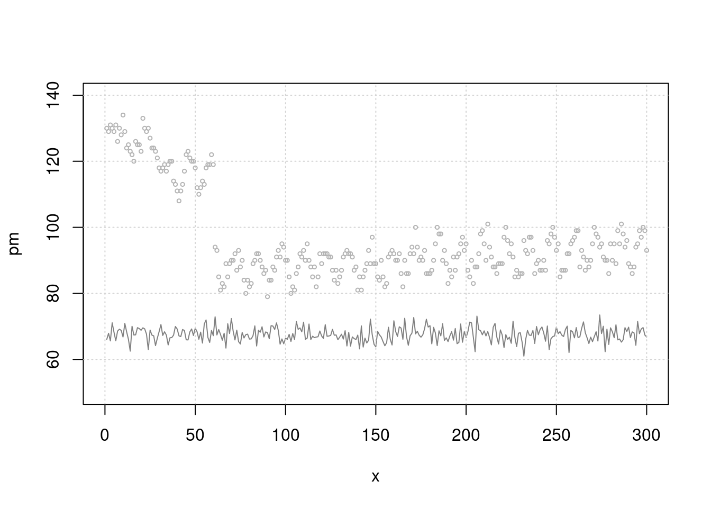
이제 간단한 회귀 분석을 해봅시다. 어떤 관계를 관찰할 수 있나요? 이벤트 기간 동안 많은 사람이 사망했습니다. 하지만 PM10과 심혈관 질환 사망률 사이에는 관계가 없어 보입니다.
분명히 미세먼지와 관련되도록 시뮬레이션으로 만든 심혈관 질환 사망률 데이터인데요. 왜 그럴까요? 아직 ’지연(lag)’과 ’계절성(seasonality)’이 고려되지 않았습니다
mt3 <- glm(death2 ~ x+sin(x/2)+pm+event)
summary(mt3)$coefficients Estimate Std. Error t value Pr(>|t|)
(Intercept) 90.10455149 6.861474711 13.1319513 2.476263e-31
x 0.02379324 0.003500538 6.7970236 5.915161e-11
sin(x/2) -4.41585403 0.308633540 -14.3077581 1.247252e-35
pm -0.06144597 0.101078610 -0.6079028 5.437196e-01
event 35.05109683 0.757861036 46.2500315 3.230388e-137그래프를 다시 보고, 적합된 선(fitted line)은 어떠한가요?
plot(x, pm, type="l", col=grey(0.5), ylim=c(50, 140), xlim=c(0, 300))
grid()
lines(x, death2, col=grey(0.7), type="p", cex=0.5)
mp3 <- c( predict(mt3))
lines(x, mp3, col=75)
이제 사망률 잔차와 PM10 간의 간단한 회귀 모델입니다. 이게 맞나요?
mt2 <- glm(death2 ~ x+sin(x/2)+event)
resid_mt2 <-resid(mt2)
risk.m0<-glm(resid_mt2 ~ pm, family=gaussian)
summary(risk.m0)
Call:
glm(formula = resid_mt2 ~ pm, family = gaussian)
Coefficients:
Estimate Std. Error t value Pr(>|t|)
(Intercept) 4.14114 6.79037 0.61 0.542
pm -0.06128 0.10043 -0.61 0.542
(Dispersion parameter for gaussian family taken to be 14.18007)
Null deviance: 4230.9 on 299 degrees of freedom
Residual deviance: 4225.7 on 298 degrees of freedom
AIC: 1650.9
Number of Fisher Scoring iterations: 2risk.mp0 <- c( predict(risk.m0))
plot(pm, resid_mt2, type='p', cex=0.5)
lines(pm, (risk.mp0), col=25)
여기 또 다른 사망률 잔차와 PM10 잔차 간의 간단한 회귀 모델이 있습니다. 이게 맞나요?
mt2 <- glm(death2 ~ x+sin(x/2)+event)
resid_mt2 <-resid(mt2)
pm2 <- glm(pm ~ x+sin(x/2))
resid_pm2 <-resid(pm2)
risk.m1<-glm(resid_mt2 ~ resid_pm2, family=gaussian)
risk.mp1 <- c( predict(risk.m1))
plot(resid_pm2, resid_mt2, type='p', cex=0.5)
lines(resid_pm2, (risk.mp0), col=25)
이것은 직관적인 그래프입니다. 시간 추세와 계절적 변동을 제거한 후 두 잔차 간의 관계를 보여줍니다.
4.3.0.1 자기상관 (Autocorrelation)
library(tidyverse)
dat = cbind('time'=x, pm,death2,event) %>% data.frame() %>% tibble()
dat %>% head()# A tibble: 6 × 4
time pm death2 event
<dbl> <dbl> <dbl> <dbl>
1 1 66.1 130 1
2 2 67.9 129 1
3 3 65.6 131 1
4 4 71.1 130 1
5 5 68.2 129 1
6 6 65.7 131 1자기상관(Autocorrelation)은 특정 시점의 관측값이 시간 지연(time lag)을 가진 다른 관측값과 얼마나 연관되어 있는지를 나타냅니다. 예를 들어, 주말은 7일의 자기상관을 가지며, 계절은 12개월의 자기상관을 가집니다.
\[ r(k) = \frac{1}{N} \sum_{t=1}^{N-k} (x_{t} - \bar{x})(x_{t+k} - \bar{x})/c(0) \tag{2.1} \]
\[ c(0) = \frac{1}{N} \sum_{t=1}^{N-k}(x_{t} - \bar{x})^2 \]
여기서:
- \({r}(k)\): 시간 지연 k에서의 자기상관계수
- N: 전체 관측값의 개수
- \({x}_{t}\): 시점 t에서의 관측값
- \(\bar{x}\): 관측값의 평균
- \(c(0)\): 분산
자기상관 분석에서 가장 중요한 요소 중 하나는 계절성(seasonal factor)입니다. 따라서 계절성 요인을 제거하기 전과 후의 자기상관 함수(ACF) 플롯을 비교합니다.
#par(mflow)
par(mfrow=c(4, 2))
plot(x, death2, type='p', cex=0.5)
acf(dat$death2)
# adjusting seasonality
ar1 <- glm(death2 ~ x +sin(x/2)+event)
plot(x, death2, type='p', cex=0.5)
lines(x, predict(ar1), col = 'red')
acf(resid(ar1))
# adjusting seasonality by gam model
library(mgcv)
ar2 <- mgcv::gam(death2 ~ s(x,bs="cc", k=100)+event, family=gaussian)
plot(x, death2, type='p', cex=0.5)
lines(x, predict(ar2), col = 'red')
acf(resid(ar2))
library(forecast)
auto.arima(dat$death2)Series: dat$death2
ARIMA(2,1,2)
Coefficients:
ar1 ar2 ma1 ma2
0.6952 -0.4906 -0.8632 0.7667
s.e. 0.1099 0.1185 0.0810 0.0872
sigma^2 = 15.81: log likelihood = -835.21
AIC=1680.42 AICc=1680.62 BIC=1698.92m1<-arima(dat$death2, order=c(2,1,2))
plot(x, death2, type='p', cex=0.5)
lines(fitted(m1), col="red")
acf(resid(m1))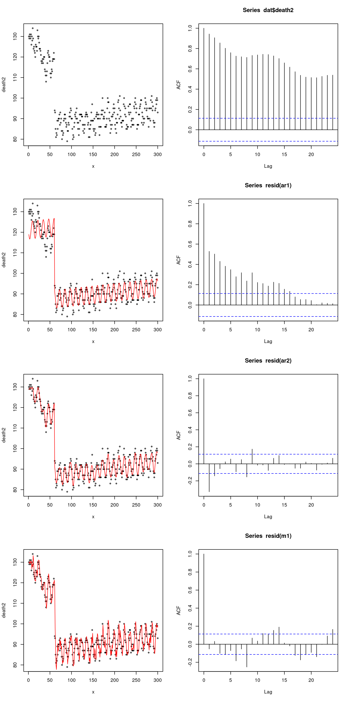
자기상관을 제거하거나 제어하는 방법은 무엇이며, 어떤 모델이 더 적절할까요? 계절적 요인보다는 비계절적 요인의 변동에 따라 사망률이 변할 수 있다는 이야기를 하고 싶다면, 자기상관을 제어하거나 제거해야 합니다.
‘gam’ 모델을 사용하면 쉽고 효과적입니다. 그리고 residual(death)와 residual(pm) 사이의 관계를 살펴볼 것이라는 점을 기억합시다. 자유도(df)가 100인 큐빅 스플라인(cubic spline)의 GAM 모델이 있습니다. 두 모델의 요약 결과는 거의 동일하므로, mod1의 GAM 모델을 사용하여 두 잔차 사이의 관계를 찾을 수 있습니다.
library(mgcv)
time = dat$time
mod1 = mgcv::gam(death2 ~ pm + s(time, bs='cc', k=100))
mod1 %>%
summary()
Family: gaussian
Link function: identity
Formula:
death2 ~ pm + s(time, bs = "cc", k = 100)
Parametric coefficients:
Estimate Std. Error t value Pr(>|t|)
(Intercept) 105.38002 6.56030 16.063 <2e-16 ***
pm -0.13082 0.09704 -1.348 0.179
---
Signif. codes: 0 '***' 0.001 '**' 0.01 '*' 0.05 '.' 0.1 ' ' 1
Approximate significance of smooth terms:
edf Ref.df F p-value
s(time) 72.67 98 50.72 <2e-16 ***
---
Signif. codes: 0 '***' 0.001 '**' 0.01 '*' 0.05 '.' 0.1 ' ' 1
R-sq.(adj) = 0.943 Deviance explained = 95.7%
GCV = 13.955 Scale est. = 10.482 n = 300rpm = mgcv::gam(pm ~ s(time, bs='cc', k=100))
rdeath = mgcv::gam(death2 ~ s(time, bs='cc', k=100))
mod2 = mgcv::gam(resid(rdeath) ~ resid(rpm))
mod2 %>%
summary()
Family: gaussian
Link function: identity
Formula:
resid(rdeath) ~ resid(rpm)
Parametric coefficients:
Estimate Std. Error t value Pr(>|t|)
(Intercept) 1.528e-14 1.626e-01 0.000 1.000
resid(rpm) -1.036e-01 7.513e-02 -1.379 0.169
R-sq.(adj) = 0.00301 Deviance explained = 0.634%
GCV = 7.9884 Scale est. = 7.9352 n = 300지연 시간 효과(Lag time effect)는 또 다른 중요한 문제입니다. 지연 시간의 가정은 PM10 증가 시간으로부터 6일 후에 심혈관 질환 사망률이 증가한다는 것입니다.
mean(pm)[1] 67.57556lag.pm<-6
pm.lag <- c(rep(67.5, lag.pm), pm[1:(length(pm)-lag.pm)])
resid_mt3 <-resid(mt3)
risk.m1<-glm(resid_mt3 ~ pm.lag, family=gaussian)
summary(risk.m1)$coefficients Estimate Std. Error t value Pr(>|t|)
(Intercept) -76.437599 5.21757250 -14.65003 5.620794e-37
pm.lag 1.131554 0.07720006 14.65743 5.276143e-37risk.mp1 <- c( predict(risk.m1))
plot(pm.lag, resid_mt3, type='p', cex=0.5)
lines(pm.lag, risk.mp1, col=25)
PM10과 심혈관 질환 사망률 사이에 양의 연관성이 있습니다.
심혈관 질환과 PM10 사이의 지연 효과를 강조하는 플롯입니다.
plot(x, resid_mt3, type="l", col=grey(0.5), ylim=c(-15, 40), xlim=c(0, 300))
grid()
lines(x, (pm-50), col=grey(0.7), type="l", cex=0.5)
lines(x, (pm.lag-60), col='red', type="l", cex=0.5)
sin()을 사용하여 계절적 요인을 고려하고 lag를 사용하여 지연 효과를 고려하고 시계열 요인(잔차)을 제거한 후 PM과 심혈관 질환 사망 사이의 관계를 분석했습니다.
#install.packages('mgcv')
library(mgcv)
#library(gam)
mgam<- mgcv::gam(death2 ~ s(x, bs="cc", k=100)+event, family=gaussian)
p <- predict(mgam)
plot(x, pm, type="l", col=grey(0.5), ylim=c(40, 150), xlim=c(0, 300), cex=2)
grid()
lines(x, death2, col=grey(0.7), type="p", cex=0.5)
legend(x=250, y=70, 'PM10')
legend(x=150, y=65, 'pm10. lag')
legend(x=210, y=110, 'Obs_death')
legend(x=10, y=50, 'Residual(Obs_Death - Gam(fitting)')
lines(x, p)
lines(x, (resid(mgam)+50), col='blue')
lines(x, pm.lag-10, col='red')
회귀 분석으로 이 문제를 해결해 봅시다. k가 더 높을 때 모델은 어떻습니까? 예, 지연 시간과 k 값을 선택하는 방법을 고려해야 합니다. 데이터 기반 방법은 적합한 모델을 선택하는 일반적인 방법입니다. 최소 AIC 또는 BIC 값은 더 적합한 모델을 제시합니다.
mgam<- mgcv::gam(death2 ~ s(x, bs="cc", k=100)+event, family=gaussian)
p <- predict(mgam)
risk.pp1 <-glm(death2 ~ p+pm.lag,family=gaussian)
summary(risk.pp1)$coefficients Estimate Std. Error t value Pr(>|t|)
(Intercept) -58.3872771 1.937186312 -30.14025 2.402418e-92
p 1.0000436 0.004566766 218.98286 0.000000e+00
pm.lag 0.8642815 0.028266084 30.57663 9.482839e-94AIC(risk.pp1)[1] 885.3135mgam150<- mgcv::gam(death2 ~ s(x, bs="cc", k=10)+event)
p150 <- predict(mgam150)
risk.pp150 <-glm(death2 ~ p150+ pm.lag, family=gaussian)
summary(risk.pp150)$coefficients Estimate Std. Error t value Pr(>|t|)
(Intercept) -72.5953393 6.74682944 -10.75992 5.109224e-23
p150 0.9979243 0.01630871 61.18966 2.087420e-170
pm.lag 1.0776412 0.09754736 11.04736 5.349868e-24AIC(risk.pp1, risk.pp150) df AIC
risk.pp1 4 885.3135
risk.pp150 4 1629.2747dlnm 패키지(분산 지연 비선형 모델)를 사용하여 지연 시간을 찾아봅시다.
library(dlnm)
cb1.pm <-crossbasis(pm, lag=10, argvar=list(fun="lin"),
arglag=list(fun="poly", degree=3))
model1 <-glm(death2 ~ cb1.pm+x+event ,
family=gaussian )
pred1.pm <-crosspred(cb1.pm, model1, at=0:100, bylag=0.1, cumul=TRUE)
plot(pred1.pm, "slices", var=1, col=3, ylab="RR", ci.arg=list(density=15,lwd=2),
#cumul = TRUE,
main="Association with a 1-unit increase in PM10")
\(\beta\)는 6일 지연에서 가장 높습니다.
이제 6일을 지연 시간으로 사용하여 회귀 분석을 수행할 수 있다는 것을 알았습니다. 남은 것은 시계열 요소를 찾고, 수정하고, 이 과정을 합리화하는 방법에 대해 더 논의하는 것입니다.
4.4 사례 연구 : 독감과 자살
이번에는 독감 유행과 자살에 대해 이야기해 보겠습니다. 몇 년 전 일본에서 독감 치료 중 자살이 뉴스에 나왔는데, 독감이 주로 유행하는 계절적 요인의 문제인지, 아니면 독감 유행이 정말 심할 때 자살이 발생하는 것인지 분석해 보고자 합니다.
4.4.1 실습 데이터
첫번째 실습 데이터는 감염병 포탈의 인플루엔자 자료입니다. 여기서 다운로드 합니다.
두번째 실습 자료는 통계청 사망자료 입니다.
이 둘을 합해 놓은 자료는 아래에 있습니다.
이것을 data 폴더에 넣겠습니다.
url <- "https://raw.githubusercontent.com/jinhaslab/opendata/main/data/flu_suicide0.csv"
download.file(url, "data/flu_suicide0.csv")if(!require(tidyverse)) install.packages('tidyverse')
if(!require(lubridate)) install.packages('lubridate')
if(!require(mgcv)) install.packages('mgcv')
if(!require(dlnm)) install.packages('dlnm')
if(!require(gam)) install.packages('gam')
if(!require(forecast)) install.packages('forecast')
if(!require(Hmisc)) install.packages('Hmisc')데이터를 살펴보면 ymd 는 숫자 형식의 날짜 (기준 1970년 1월 1일), wsui 는 1주간의 자살 사망자 수, ordweek 는 주중 순위, flu 는 주중 천명당 인플루엔자 환자 수.
data0 = read_csv("data/flu_suicide0.csv")New names:
Rows: 696 Columns: 9
── Column specification
────────────────────────────────────────────────────────
Delimiter: "," dbl (8): ...1, ymd, wsui, ordweek, nwd, YR, flu, flu2 date (1):
ymd2
ℹ Use `spec()` to retrieve the full column specification for this data. ℹ
Specify the column types or set `show_col_types = FALSE` to quiet this message.
• `` -> `...1`head(data0)# A tibble: 6 × 9
...1 ymd wsui ordweek ymd2 nwd YR flu flu2
<dbl> <dbl> <dbl> <dbl> <date> <dbl> <dbl> <dbl> <dbl>
1 35 12660 238 35 2004-08-30 36 2004 0.6 0.6
2 36 12667 211 36 2004-09-06 37 2004 2 2
3 37 12674 208 37 2004-09-13 38 2004 2.1 2.1
4 38 12681 188 38 2004-09-20 39 2004 2.2 2.2
5 39 12688 213 39 2004-09-27 40 2004 2.5 2.5
6 40 12695 224 40 2004-10-04 41 2004 2.4 2.4plot(data0$wsui)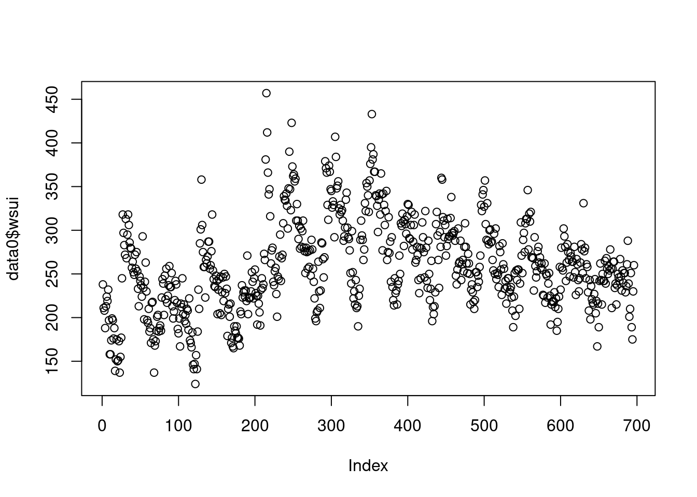
신종 플루가 2009년부터 유행했고, 이후 자살자가 관련있다는 뉴스가 나오고 있으니, 2009년 전과 후를 나타내는 변수를 만들겠습니다 .
myd<-data0 %>% mutate(Change=ifelse(YR>2008, "from 2009", "before 2009"))자료가 시계열 자료라는 것을 컴퓨터에게 알려줄 필요가 있습니다. 그리고 싸이클이 있다는 것도요. 우리는 주당 싸이클 (7일 기준)이기 때문에 frequency=365.25/7을 이용하고 시작 날짜를 정해줍니다.
tsui <-ts(myd$wsui, frequency=365.25/7, start = decimal_date(ymd("2004-08-30")))
length(myd$wsui)[1] 696length(tsui)[1] 696plot(tsui)
여기서 시계열적 요소를 찾아 보겠습니다.
d.tsui <-decompose(tsui)
#d.tsui
plot(d.tsui) ####### find seasonal and trend
summary(d.tsui$random) Min. 1st Qu. Median Mean 3rd Qu. Max. NA's
-78.1819 -18.8440 -0.3562 1.2124 18.5710 175.0412 51 이번에는 flu에 대한 시계열 분석을 해보겠습니다.
r.tsui <-d.tsui$random # residuals
s.tsui <-d.tsui$seasonal # seasonal
tr.tsui <-d.tsui$trend # long term trend
######### influenza'
tflu <-ts(myd$flu, frequency=365.25/7, start = decimal_date(ymd("2004-08-30")))
plot(tflu)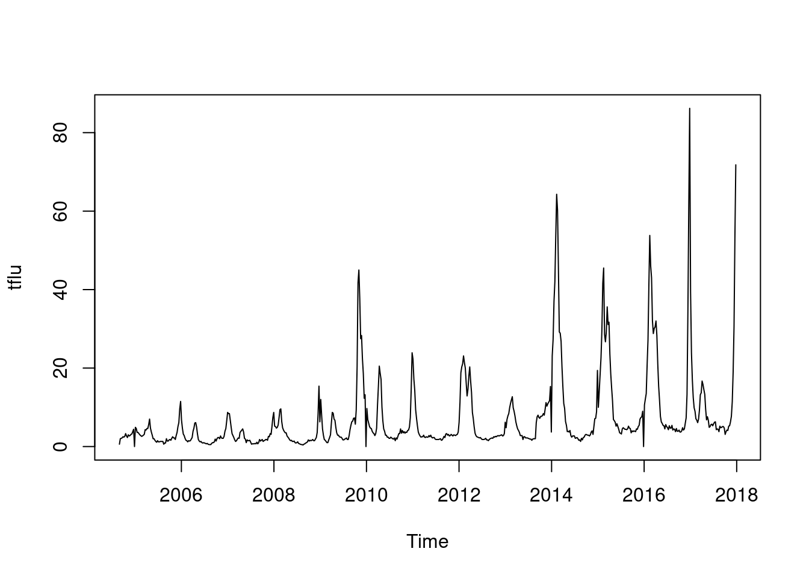
이것을 decomposition 하면
d.tflu <-decompose(tflu)
plot(d.tflu) ####### find seasonal and trend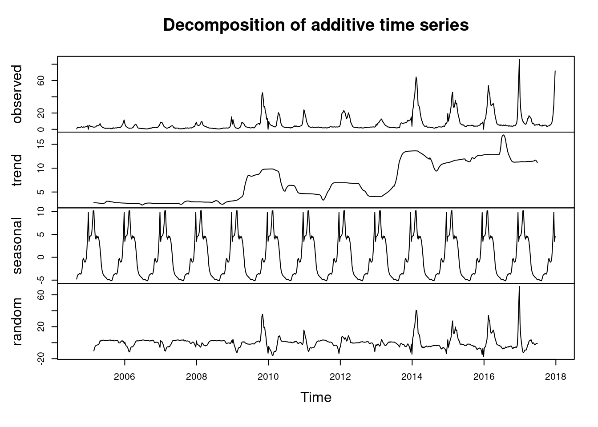
r.tflu <-d.tflu$random # residuals
s.tflu <-d.tflu$seasonal # seasonal
tr.tflu <-d.tflu$trend # long term trend4.4.3 ARIMA
ARIMA 및 시계열 분석 이 과정에서 다룰 수 있는 내용은 다음과 같습니다.
- 날짜 및 시간 형식 지정
- 데이터 전처리 (ts 클래스, 데이터 정리, 결측치 처리, 이상치 처리)
- 시계열의 통계적 특징 (자기상관, 정상성, 계절성, 추세)
| 단계 |
|---|
| 날짜 및 시간 형식 지정 |
| 데이터 전처리 |
| 시계열의 통계적 특징 |
| 표준 모델 |
| ARIMA 모델 |
4.5 분석 및 예측, 회귀 분석
시계열 분석은 패턴을 찾기 위해 데이터를 분석하는 것이고, 예측은 그 패턴을 미래로 확장하는 것입니다. 시계열 패턴을 이용한 회귀 분석(시계열 회귀 분석)은 시계열 분석을 사용하는 회귀 방법입니다.
4.6 ARIMA
ARIMA(자기회귀 통합 이동 평균, Autoregressive Integrated Moving Average)는 문자 그대로 자기회귀와 이동 평균을 이용합니다. 단변량 시계열(univariate time series)로 볼 수 있습니다. ARIMA 모델에서는 여러 매개변수를 자동으로 또는 수동으로 설정하여 구성합니다.
ARIMA(p, d, q)를 이해하면서 가 봅겠습니다.
| parameter | content | abbr |
|---|---|---|
| AR | Autoregressive part | p |
| I | Integrateion, degree of differencing | d |
| MA | Moving average part | q |
위 에서 p, d, q를 찾아 가는 방법을 ARIMA 모델이라고 부를 수 있습니다.
lags 과 forecasting errors로 구분할 수 있습니다.
- 과거의 변수가 현재를 예측, autoregressive part
- AR(1) or ARIMA(1,0,0): first order (lag) of AR
- AR(2) or ARIMA(2,0,0): second order (lag) of AR
- 과거의 error 가 현재를 예측 (forecasting error) = moving average part
- MA(1) or ARIMA(0,0,1): first order of MA
- MA(2) or ARIMA(0,0,2): second order of MA
자기상관관계 부분
\[ Y_{t} = c + \Phi_1 Y_{t-1} + \varepsilon_{t} \]
- \(t\) 시간에 관찰되는 변수 (\(Y_{t}\))는
- 상수 (c) 더하기
- 바로 1단위 전 변수 (\(Y_{t-1}\)) 에 계수(coefficient) (\(\Phi\)) 글 곱한 값을 더하고
- 현재의 에러를 \(t (e_{t})\)) 더한다
이동평균 부분
\[ Y_{t} = c + \Theta_1 \varepsilon_{t-1} + \varepsilon_t \]
- \(t\) 시간에 관찰되는 변수 (\(Y_{t}\))는
- 상수 (c) 더하기
- 바로 1단위 전 변수 (\(\varepsilon_{t-1}\)) 에 계수(coefficient) (\(\Phi\)) 글 곱한 값을 더하고
- 현재의 에러를 \(t (e_{t})\)) 더한다
결국 자기 상과관계와 이동평균을 한꺼번에 사용하면 아래와 같습니다.
\[\begin{align*} y_t &= \phi_1y_{t-1} + \varepsilon_t\\ &= \phi_1(\phi_1y_{t-2} + \varepsilon_{t-1}) + \varepsilon_t\\ &= \phi_1^2y_{t-2} + \phi_1 \varepsilon_{t-1} + \varepsilon_t\\ &= \phi_1^3y_{t-3} + \phi_1^2 \varepsilon_{t-2} + \phi_1 \varepsilon_{t-1} + \varepsilon_t\\ \end{align*}\]
d 는 시계열그림에서 ACF, PACF의 형태를 보고 차분의 필요여부 및 차수를 d를 결정하고 AR차수와 MA차수를 결정
어떻게 p, d, q 를 구할수 있을 까요?, 다음 장을 보겠습니다. ** 다음에 기회가 있을 때 하겠습니다.**
4.6.1 arima 감기 자살 , AIC
아래 ARIMA 모델을 보면 AIC 가 6583정도 나온 것을 알 수 있습니다. 우리는 이것을 통해 AIC가 6583 이하 정도 나오는 gam 모델을 사용하겠다 정도의 개념을 얻었습니다.
par(mfrow=c(1,1))
auto.arima(myd$wsui)Series: myd$wsui
ARIMA(0,1,2)
Coefficients:
ma1 ma2
-0.3227 -0.0993
s.e. 0.0379 0.0376
sigma^2 = 756.3: log likelihood = -3288.64
AIC=6583.28 AICc=6583.31 BIC=6596.91myd <-myd %>% mutate(ma4 =ma(wsui, order=4), ymd2=as.Date(ymd2) ) ### 4weeks moving average
myd <-myd %>% mutate(ts.wsui =tsui, ts.ma4=ts(ma4, frequency =365.25/7 ))
m1<-arima(myd$wsui, order=c(1,1,1), fixed=c(NA, NA)) ## NA means include, 0 means exclude
m1
Call:
arima(x = myd$wsui, order = c(1, 1, 1), fixed = c(NA, NA))
Coefficients:
ar1 ma1
0.2294 -0.5589
s.e. 0.0941 0.0797
sigma^2 estimated as 755.2: log likelihood = -3289.13, aic = 6584.26tsdiag(m1)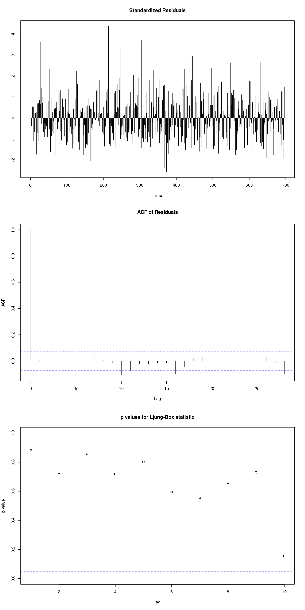
4.7 AIC BIC in generalize additive model
gg <-function(x) {
model <-glm(data=myd, wsui ~ ns(ymd2, x))
aic <-AIC(model)
return(aic)
}
gg2 <-function(x) {
model <-glm(data=myd, wsui ~ ns(ymd2, x))
bic <-BIC(model)
return(bic)
}
test <-mapply(x=c(50:100), gg);test2<-mapply(x=c(50:100), gg2)
par(mfrow=c(1,2))
plot(c(50:100), test);plot(c(50:100), test2)
abline(v=64)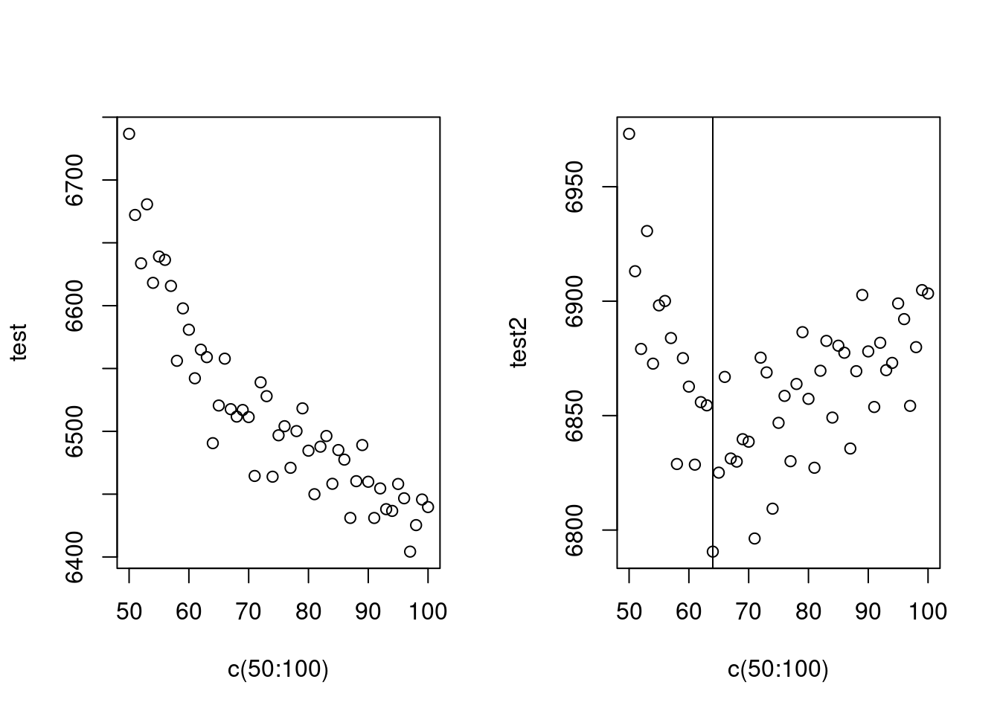
AIC는 수렴하지 않아 어렵고, BIC는 64에서 최소 값을 보이네요. 64를 자유도로 선정하고 수행하겠습니다.
mod1<-glm (wsui ~ ns(ymd2, 64), data=myd)
BIC(mod1)[1] 6790.573long term trend (월)과 단기 trend 를 나누어 만들어 보면 어떨까요? 위에 64로 한번에 해결하는 게 더 좋은 모형 같습니다.
mod1<-glm( wsui ~ ns(ordweek, 12)+ns(nwd, 5), data=myd)
BIC(mod1)[1] 6907.866기존의 sin cosin 방법으로 시계열 분석을 해보는 것은 어떨까요?
par(mfrow=c(1,1))
ssp<-spectrum(myd$wsui)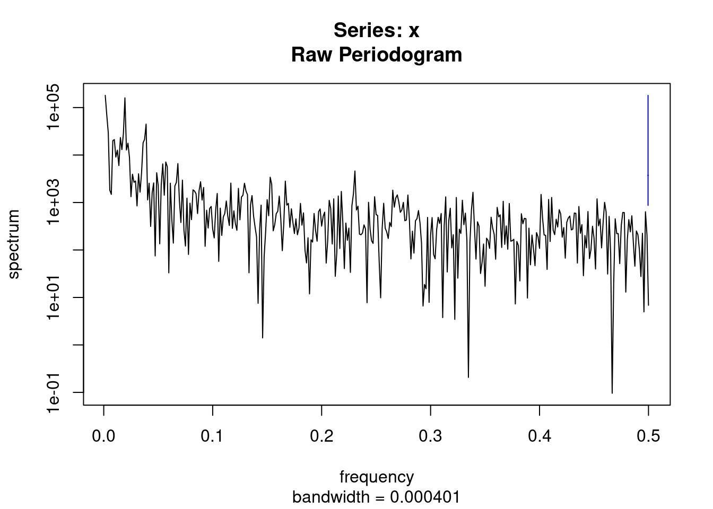
per<-1/ssp$freq[ssp$spec==max(ssp$spec)]
sin.x<-sin(2*pi*myd$ordweek/(365.25/7))
cos.x<-cos(2*pi*myd$ordweek/(365.25/7))
modsean <-glm(wsui ~ ns(sin.x, 2)+ns(cos.x, 2), data=myd)
modlgam<-glm(wsui ~ ns(ordweek, 4), data=myd)
plot(myd$ymd2, myd$wsui, ylim=c(-10, 450), col='grey')
points(myd$ymd2, modlgam$fitted.values, type='l', col='blue')
points(myd$ymd2, modsean$fitted.values, type='l', col='blue')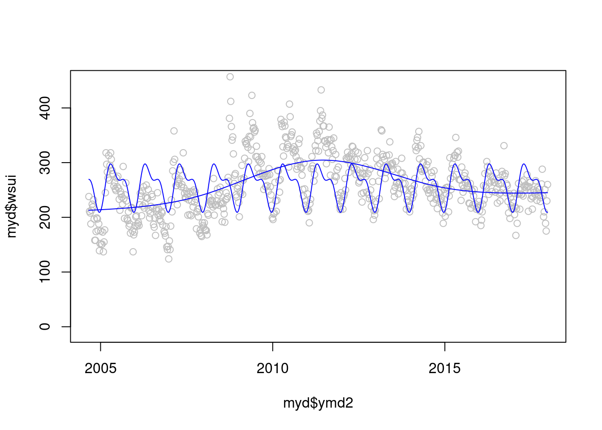
자 이제 2 모델을 검토해 보겠습니다. gam 과 sin cosin 모델 어떤게 더 좋아 보이시나요? 정해진 규칙은 겂습니다.
plot(myd$ymd2, myd$wsui, ylim=c(-10, 450), col='grey')
points(myd$ymd2, modlgam$fitted.values, type='l', col='blue')
points(myd$ymd2, modsean$fitted.values, type='l', col='blue')
mod1 <-glm(wsui ~ flu+ns(ordweek, 51)+ns(sin.x, 2)+ns(cos.x, 2) , data=myd)
points(myd$ymd2, mod1$fitted.values, type='l', col='red')
modgam<-glm (wsui ~ ns(ymd2, 64), data=myd)
points(myd$ymd2, modgam$fitted.values, type='l', col='black')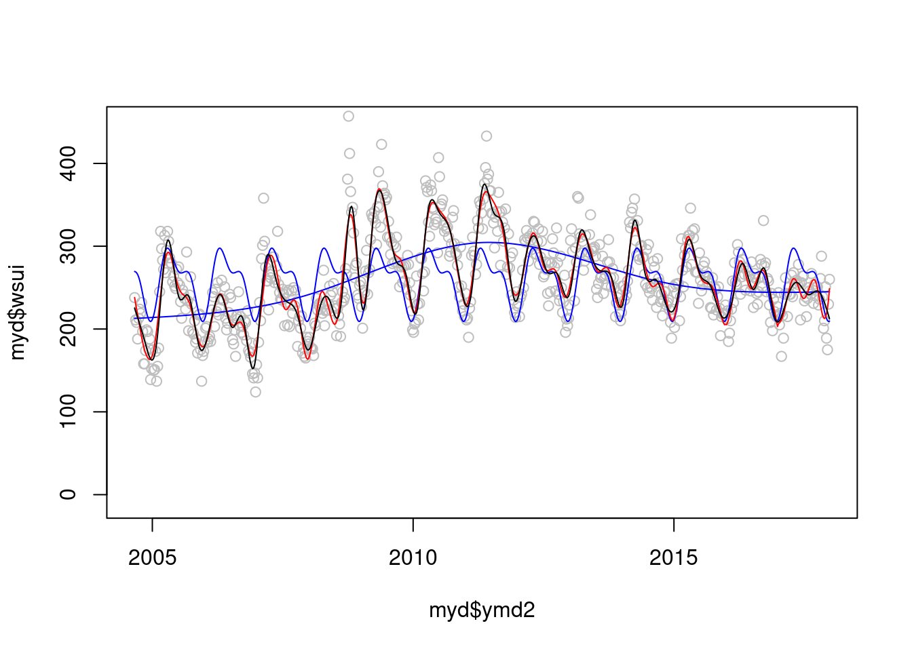
정해진 규칙은 없지만 AIC와 BIC로 비교해 볼수 있을 것 같습니다.
AIC(mod1);AIC(modgam)[1] 6522.708[1] 6490.58BIC(mod1);BIC(modgam)[1] 6786.338[1] 6790.573이제 sin과 cos 에 어떠한 df를 주는 것이 좋을 까요?
myd$econo <- ifelse(myd$YR %in% c(2009), 1, 0)
gg <-function(x) {
model <-glm(data=myd, wsui ~ Lag(flu, 1)+ns(ordweek, 4)+ns(sin.x, x)+ns(cos.x, x))
aic <-AIC(model)
return(aic)
}
gg <-function(x) {
model <-glm(data=myd, wsui ~ Lag(flu, 1)+ns(ordweek, 4)+ns(sin.x, x)+ns(cos.x, x))
bic <-BIC(model)
return(bic)
}
p<-c(1:10)
test <-mapply(x=p, gg);test2<-mapply(x=p, gg2)
plot(p, test)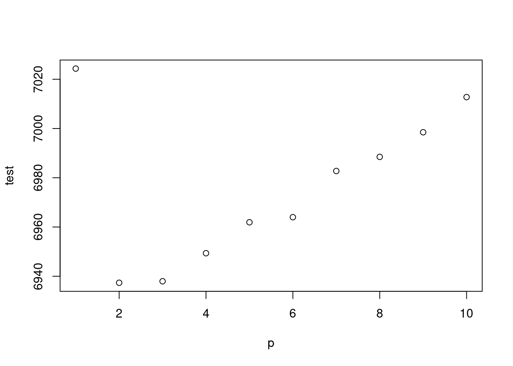
plot(p, test2)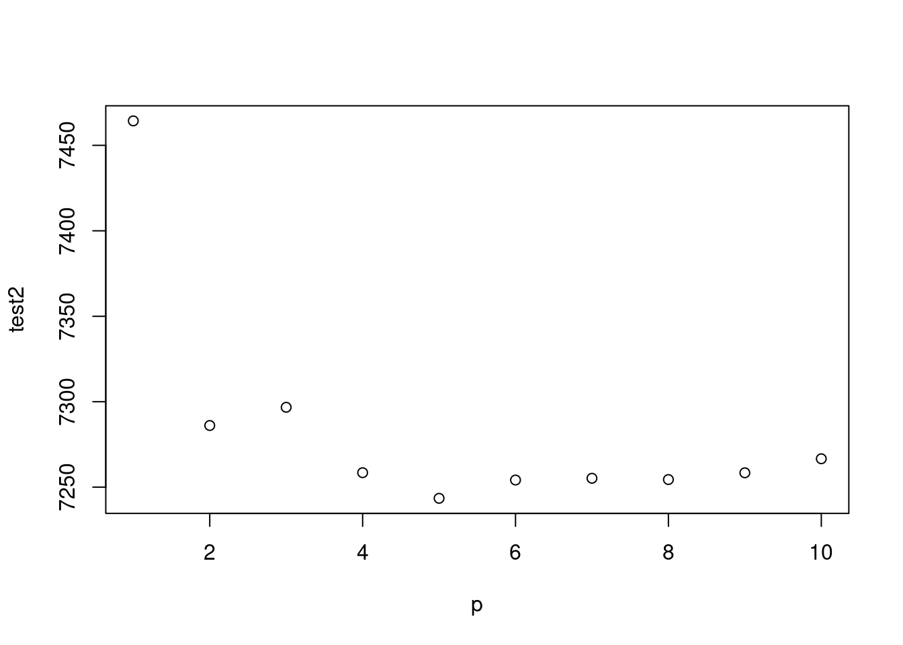
주중 효과 까지 한번 보겠습니다.
gg <-function(x) {
model <-glm(data=myd, wsui ~ Lag(flu, 1)+ ns(ordweek, x)+ns(sin.x, 2)+ns(cos.x, 2))
aic <-AIC(model)
return(aic)
}
gg2 <-function(x) {
model <-glm(data=myd, wsui ~ Lag(flu, 1)+ns(ordweek, x)+ns(sin.x, 2)+ns(cos.x, 2))
bic <-BIC(model)
return(bic)
}
gg(10)[1] 6854.818test [1] 7024.330 6937.360 6937.973 6949.360 6961.920 6963.986 6982.745 6988.485
[9] 6998.475 7012.750p<-c(10:100)
test <-mapply(x=p, gg);test2<-mapply(x=p, gg2)
par(mfrow=c(1,2))
plot(p, test)
abline(v=39)
plot(p, test2)
abline(v=39)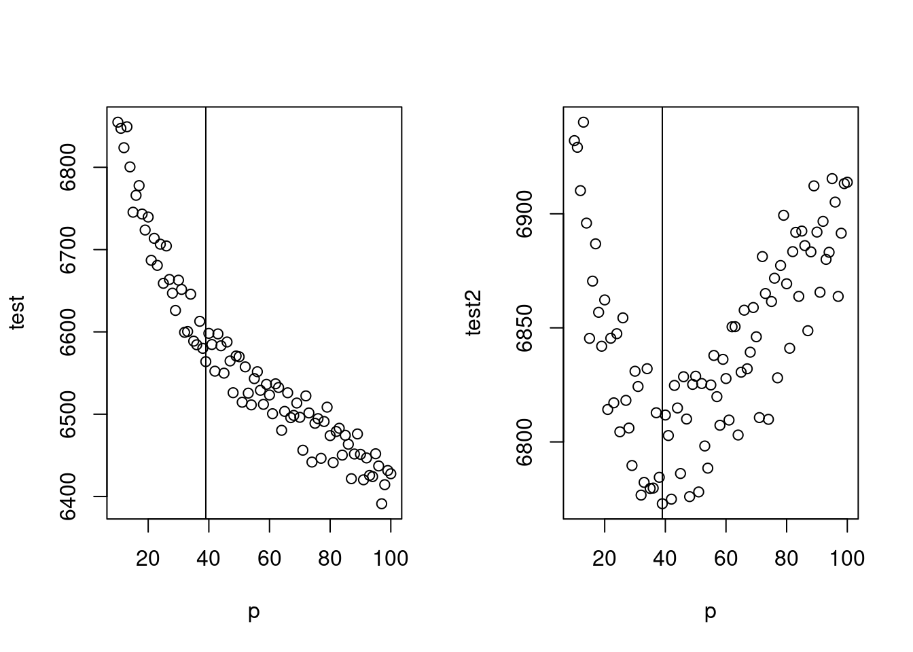
최종 모델은 아래와 같습니다.
mod2 <-glm(data=myd, wsui ~ flu+ ns(ordweek, 39)+ns(sin.x, 2)+ns(cos.x, 2))
par(mfrow=c(1,1))
plot(myd$ymd2, myd$wsui, cex=0.5, col='grey', ylim=c(-50, 450))
points(myd$ymd2, mod2$fitted.values, type='l', col='red')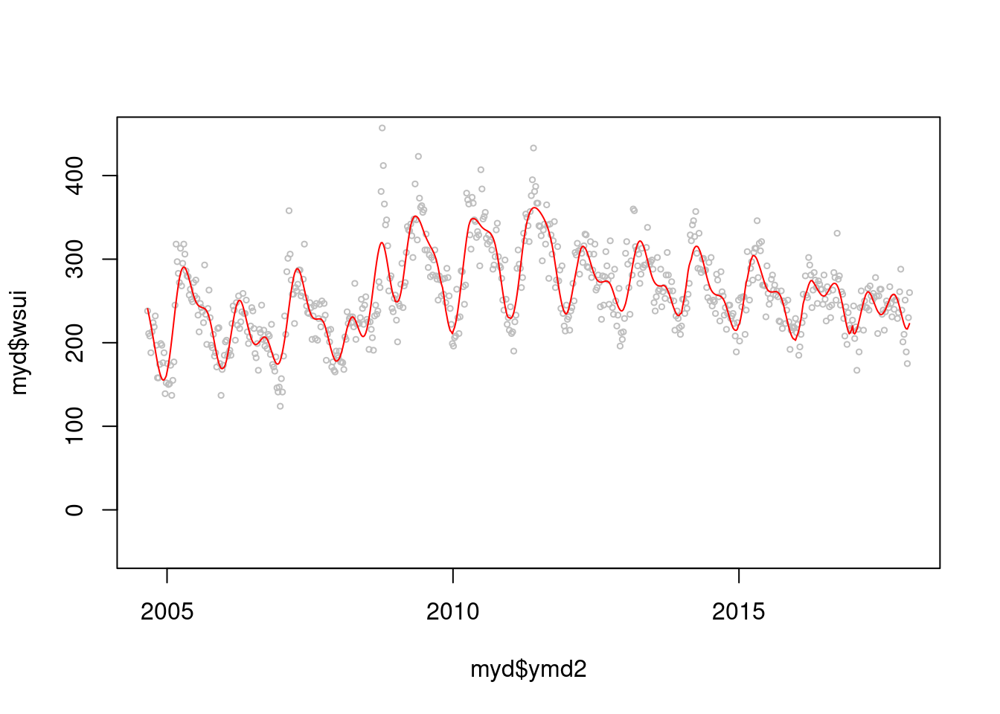
BIC(mod2)[1] 6785.128AIC(mod2)[1] 6576.042그럼 이제 lag time 을 non-linear 로 할때 몇차 방정식이 좋을까요? 둘다 2차 방정식이 좋네요
gg3<-function(pp){
cb<- crossbasis(myd$flu/10, lag=24, argvar=list("lin"), arglag = list(fun="poly", degree=pp))
model<-glm(data=myd, wsui ~ cb + ns(ordweek, 39)+ns(sin.x, 2)+ns(cos.x, 2))
aic<-AIC(model)
return(aic)
}
gg4<-function(pp){
cb1<- crossbasis(myd$flu/10, lag=24, argvar=list("lin"), arglag = list(fun="poly", degree=pp))
model1<-glm(data=myd, wsui ~ cb1 + ns(ordweek, 39)+ns(sin.x, 2)+ns(cos.x, 2))
bic<-BIC(model1)
return(bic)
}
p<-c(2:10)
test3 <-mapply(pp=p, gg3);test4 <-mapply(pp=p, gg4)
par(mfrow=c(1,2))
plot(p, test3)
plot(p, test4)
종합해서 나타내 보겠습니다. 이것이 첫번째 종착지 입니다.
par(mfrow=c(1,1))
cb1<- crossbasis(myd$flu/10, lag=24, argvar=list("lin"), arglag = list(fun="poly", degree=2))
model1<-glm(data=myd, wsui ~ cb1 + ns(ordweek, 39)+ns(sin.x, 2)+ns(cos.x, 2), family=quasipoisson())
pred1.cb1 <-crosspred(cb1, model1, at=1:100, bylag=0.1, cumul=TRUE)
plot(pred1.cb1, "slices", var=1, col=3, ylab="Relative risk of suicide", #ci.arg=list(density=50, lwd=1),#
main="Temporal effect by influenza",
xlab="Lag (weeks)", #ylim=c(0.980, 1.02),
col='black') ;grid()
title(main="% increment of influenza like illness",
adj=1, line=0, font.main=3, cex=0.5 )
lin <-c(5:10)
abline(v=lin, lty=3, col='lightgray')
axis(side=1, at=c(6, 7, 8, 9))
2009년 이전과 이후를 그려보겠습니다.
myd2<-myd %>% mutate(sinx=sin.x, cosx=cos.x) %>% mutate(flu210=flu/10)
mf1d <-myd2 %>% filter(YR <=2008)
mf2d <-myd2 %>% filter (YR>=2009)
mf1 <-glm(data=mf1d, wsui ~ flu + ns(ordweek, 25)+ns(sinx, 2)+ns(cosx, 2), family=quasipoisson())
mf1s<-glm(data=mf1d , flu210 ~ ns(ordweek, 25)+ns(sinx, 2)+ns(cosx,2), family=quasipoisson())
b2008<-summary(mf1)$coefficient[2,]
mf2 <-glm(data=mf2d, wsui ~ flu + ns(ordweek, 22)+ns(sinx, 2)+ns(cosx, 2), family=quasipoisson())
mf2s <-glm(data=mf2d, flu210 ~ns(ordweek, 25)+ns(sinx, 2)+ns(cosx,2), family=quasipoisson())
f2008<-summary(mf2)$coefficient[2,]
mfresid<-c(mf1$residuals, mf2$residuals)
Ch <-c(myd2$Change_2008)Warning: Unknown or uninitialised column: `Change_2008`.#exp(cbind("Relative Risk"=coef(mf2), confint.default(mf2, level = 0.95)))
#exp(cbind("Relative Risk"=coef(mf1), confint.default(mf1, level = 0.95)))
# E(Y) = intercept + B1X1 +gam(others)
# E(Y)- intercept - B1X1 = gam(otehrs)
gamothers1 <- mf1$fitted.values - 0.943684 -(-0.013931) *mf1d$flu210
gamothers2 <- mf2$fitted.values - 0.8892468 -(0.0023323696) *mf2d$flu210
# E(Y)- intercept - gam(others)= B1X1
# Hence Y axis = E(Y)- intercept - gam(others)
Yaxis.mf1d <- mf1$fitted.values -(0.943684) - gamothers1
Yaxis.mf2d <- mf2$fitted.values -(0.8892468) - gamothers2
mf1d$Yaxis.mf <-Yaxis.mf1d
mf2d$Yaxis.mf <-Yaxis.mf2d
plot(mf1d$flu210, Yaxis.mf1d)
plot(mf2d$flu210, Yaxis.mf2d)
plot(myd2$flu210*10, myd2$wsui)
#summary(glm(Yaxis.mf1d ~ mf1d$flu210))
#summary(glm(Yaxis.mf2d ~ mf2d$flu210))
tt <-c(mf1d$Yaxis.mf, mf2d$Yaxis.mf)
tt2<-c(mf1$fitted.values, mf2$fitted.values)
myd2 <-myd2 %>% mutate(Yaxis.mf =tt, mfresid =mfresid, mf.fit=tt2)2009년 이후로 좀더 사망하게 되네요.
f3<-ggplot(data=myd2, aes(flu210, Yaxis.mf, col=Change))+geom_line(size=1)+
geom_point(data=myd2, aes(flu210, Yaxis.mf, shape=Change), size=0.0)+
theme_bw(base_size=14,base_family='Times New Roman')+
theme(panel.border = element_blank(), axis.line = element_line(colour = "black"),
axis.text.x=element_text(size=12),
axis.text.y=element_text(size=12))+
xlab("Influenza") +ylab("Increment of Suicide")Warning: Using `size` aesthetic for lines was deprecated in ggplot2 3.4.0.
ℹ Please use `linewidth` instead.fig3 <-f3 + geom_point(aes(flu210, mfresid, shape=Change), size=3 ) +
scale_shape_manual(values=c(1, 20))+ scale_colour_manual(values=c('red', 'grey45'))+
theme(legend.position="right") +
labs(title="Linear relationship between Influenza and Suicide",
subtitle="Beta = -0.066, p = 0.214 before 2009\n *RR = 0.013, p = 0.018 from 2009") +
theme(plot.subtitle=element_text(size=12, hjust=1, face="italic", color="black")) +
scale_x_continuous(trans = 'log')
fig3Warning in scale_x_continuous(trans = "log"): log-2.718282 transformation
introduced infinite values.Warning in scale_x_continuous(trans = "log"): log-2.718282 transformation introduced infinite values.
log-2.718282 transformation introduced infinite values.
지금까지의 내용을 정리해 보겠습니다.
mf11 <-glm(data=mf1d , wsui ~ ns(ordweek, 25)+ns(sinx, 2)+ns(cosx,2))
mf12 <-glm(data=mf2d, wsui ~ ns(ordweek, 22)+ns(sinx, 2)+ns(cosx, 2))
tt3<-c(mf11$residuals, mf12$residuals)
myd2<-myd2 %>% mutate(f3resid=tt3) %>% mutate(Period=Change)
f1<-ggplot(data=myd2, aes(ymd2, wsui, shape=Change), size=0.3)+ scale_shape_manual(values=c(1, 19), name="")+
geom_point(data=myd2, aes(ymd2, wsui, shape=Change))+
#geom_point(aes(x=ymd2, y=f3resid, col=Change)) +
geom_line(data=myd2, aes(ymd2, mod2$fitted.values, linetype="A", color='A'))+
geom_line(data=myd2, aes(ymd2,flu210*20, linetype="B", color='B'))+
geom_line(data=myd2, aes(ymd2, f3resid, linetype="C", color='C'))+
scale_linetype_manual(values=c(A="dotted", B="solid", C="dashed"),
labels=c("Suicide (Crude)", "Influenza like illness", "Suicide \n(Time series adjusted)"),
name="Suicide and Influenza")+
scale_color_manual(values=c(A="black", B="blue", C="red"),
labels=c("Suicide (Crude)", "Influenza like illness", "Suicide \n(Time series adjusted)"),
name="Suicide and Influenza")+
theme(panel.border = element_blank(), axis.line = element_line(colour = "black"),
axis.text.x=element_text(size=12),
axis.text.y=element_text(size=12)) +
xlab("Years (unit=weeks)") +ylab("Number of weekly suicide")
figure1 <- f1 +
geom_smooth(aes(ymd2, f3resid), method='gam', formula=y ~ns(x, 60),
se=TRUE, col='red', linetype="solid", size=0.3, fill = 'red')+
theme( legend.position = "right") +
labs(caption ="*Beta = weekly suicide number change by % increment of influenza like illness",
title=""#, subtitle="Beta = -0.014, p = 0.158 before 2009\n Beta = 0.002, p = 0.011 from 2009"
) + theme(plot.title=element_text(size=16, hjust=0.5)) + #face="italic", color="black"))+
theme(legend.text=element_text(size=12)) +
scale_y_continuous(sec.axis = sec_axis((~./20), name="Influenza like illness ( per 100 outpatient )")) +
annotate("text", x = as.Date('2008-09-01'), y = 450, label = 'bold("Before 2009 ( )")', parse=TRUE, family='A', hjust = 1) +
annotate("text", x = as.Date('2008-09-01'), y = 430, label = 'italic("*Beta = -0.066")', parse=TRUE, family='A', hjust = 1) +
annotate("text", x = as.Date('2008-09-01'), y = 410, label = 'italic(" p = 0.214")', parse=TRUE, family='A', hjust = 1) +
guides(shape=FALSE)+
annotate("text", x = as.Date('2012-01-01'), y = 450, label = 'bold("From 2009 ( )")', parse=TRUE, family='A', hjust = 0) +
annotate("text", x = as.Date('2012-01-01'), y = 430, label = 'italic("*Beta = 0.013")', parse=TRUE, family='A', hjust = 0) +
annotate("text", x = as.Date('2012-01-01'), y = 410, label = 'italic(" p = 0.019")', parse=TRUE, family='A', hjust = 0) +
geom_point(x=as.Date('2008-06-25'), y=449, size=3, shape=1) +
geom_point(x=as.Date('2013-11-01'), y=449, size=3, shape=19) +
geom_vline(xintercept = as.Date('2009-01-01'), linetype="dotted",
color = "grey50") #+Warning: The `<scale>` argument of `guides()` cannot be `FALSE`. Use "none" instead as
of ggplot2 3.3.4. #annotate("rect", xmin = as.Date('2004-06-01'), xmax = as.Date('2009-01-01'), ymin = -50, ymax = 470,
# alpha = .1)
figure1 
여기 까지 실습하시느라 수고하셨습니다. 상기 분석 방법으로 아래 논문을 출판하였습니다. 참고해서 보시면 좋겠습니다. https://journals.plos.org/plosone/article/comments?id=10.1371/journal.pone.0244596